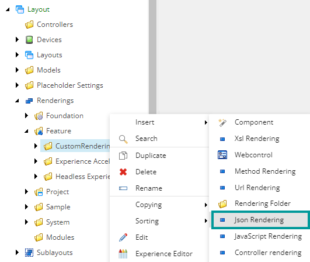
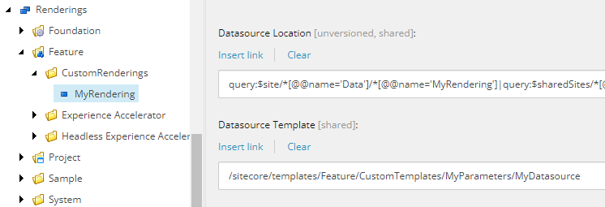
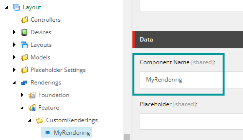
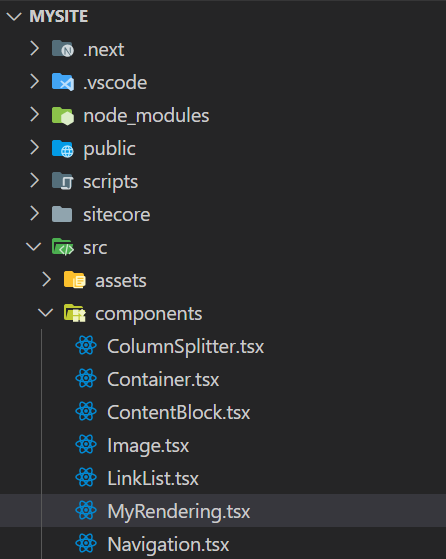

Walkthrough: Building a simple rendering
How to create a new rendering.
XM Cloud comes with a set of default renderings for simple text, images, page content, and so on. You can also create a new rendering. This topic describes the tasks involved in creating a rendering. As an example, we create a rendering called MyRendering that renders a simple text field.
Note
To help you decide whether you must create a custom component, you can check this flowchart.
Building a simple rendering with datasource and rendering parameters is a three-step process:
Create the rendering item with a data source template and rendering parameters in the Content Editor.
Make the rendering available in the Toolbox, so that content editors can add the rendering to their pages in the Experience Editor and in Pages.
Create a component file for your front-end JSS app that corresponds to the rendering item defined in the Content Editor.
This walkthrough describes how to:
Create a rendering item
Add the rendering to the Toolbox
Add a JavaScript component
Add grid and styling support
To create a rendering item with datasource and rendering parameters:
In the content tree, navigate to /sitecore/layout/Renderings/Feature, right-click and click Insert, Rendering Folder. Enter the name CustomRenderings.
Right-click the CustomRenderings folder, click Json Rendering, and enter the name MyRendering.
Navigate to sitecore/Templates/Feature, right-click and then click Insert, Template Folder. Enter the name CustomTemplates.
Right-click the CustomTemplates folder, click Insert, and then click Insert from Template.
In the Insert from Template dialog box, navigate to /Templates/Foundation/Headless Experience Accelerator/Presentation/Rendering Parameters, click the Base Rendering Parameters item, and in the Item Name field, enter the name MyParameters. If you want any fields, add them here.
Right-click the MyParameters folder, click Insert, and then click Insert from Template.
In the Insert from Template dialog box, navigate to /Templates/System/Templates, click the Standard template item and in the Item Name field, enter the name MyDatasource .
In this example, we are adding a text field named SomeText to the data source template you just created. In the Insert from Template dialog box, navigate to Templates/Feature/Headless Experience Accelerator/Page Content, click Text, and enter the name SomeText in the Item Name field.
In the content tree, navigate to MyRendering:
In the Datasource Template field, click Insert link, and select the MyDatasource item you just created.
In the Datasource Location field, insert this query: query:$site/*[@@name='Data']/*[@@name='MyRendering']|query:$sharedSites/*[@@name='Data']/*[@@name='MyRendering'].

In the Presentation folder of your site, you can set which renderings are visible in the Toolbox in the Experience Editor. This allows content editors to add the rendering to their pages. Creating a rendering requires that you also create a default rendering variant. In this example we name it Default. Later, when we create the component file on the rendering host site, we must reference the Default variant using that exact name.
To add a rendering to the Toolbox:
In the content tree, navigate to sitecore/Content/[site collection]/[site]/Presentation.
Right-click Available Renderings, click Insert, and then click Available Renderings. Enter the name MyRenderings.
Navigate to sitecore/Content/[site collection]/[site], right-click Data, click Insert, and then click Insert from Template.
In the Insert from Template dialog box, navigate to Templates/Common and select Folder. In the Item Name field, enter the name MyRendering. This folder is used to store the data sources of your rendering.
Navigate to sitecore/Content/[site collection]/[site]/Presentation/Headless Variants and insert a variant. Enter the name MyRendering.
Right-click the MyRendering item, click Insert, and then click Variant Defintion. Enter the name Default. Renderings must have a default variant. The name you give it must be consistent with the name used in the JavaScript component file.
Your front-end JSS app must have a JavaScript component that is consistent with the component you have just created in the Content Editor.
Note
The component TSX files are typically located in the following directory:
src/components.
To add a component:
In the directory where the TSX files are located, add a component file with the same name as the name you defined in the Component Name field of the rendering item. In this example, we name it MyRendering.tsx:

The following example of a JavaScript component renders the SomeText field that you added to the data source item of the rendering:
Note
The exported method is called Default in accordance with the variant definition you created earlier.
import React from 'react';
import { Field, Text } from '@sitecore-jss/sitecore-jss-nextjs';
interface Fields {
SomeText: Field<string>;
}
type MyRenderingProps = {
params: { [key: string]: string };
fields: Fields;
};
export const Default = (props: MyRenderingProps): JSX.Element => {
return (
<div className={`component myrendering ${props.params.styles}`}>
<div className="component-content">
<div>
<Text field={props.fields.SomeText} />
</div>
</div>
</div>
);
};The default renderings come with grid and style support. If you want your custom rendering to be compliant with SXA grid and styling, you must provide a parameter template and assign some base SXA templates.
To add grid and styling support for a rendering:
Add a parameters template to your rendering. Navigate to sitecore/Layout/Renderings/Feature/CustomRenderings and click the MyRendering rendering.
In the Editors option section, in the Parameters Template field, enter the path to your template. In this example, enter Templates/Feature/CustomTemplates/MyParameters.
Now you can assign some base SXA templates to your rendering parameter template, for example:
IStyling for styles support. This template adds a new field in the control properties for that rendering and an additional button on the edit frame of the rendering. Inherits from the Base Rendering Parameters template.
IComponentVariant for rendering variant support. This template adds a rendering variant drop-down in the control properties and Variant Selector drop-down on the edit frame. Inherits from the Base Rendering Parameters template.
Grid Parameters for grid support. This template adds a grid field in the control properties and an additional button on the edit frame of the rendering. Inherits from the Base Rendering Parameters template.
IRenderingID for HTML identifier support. This template adds an ID field to the rendering configuration, which renders an attribute to an element in the HTML code.
IDynamicPlaceholder for dynamic placeholder keys support. This template adds a placeholder in addition to, for example, a title or some text.